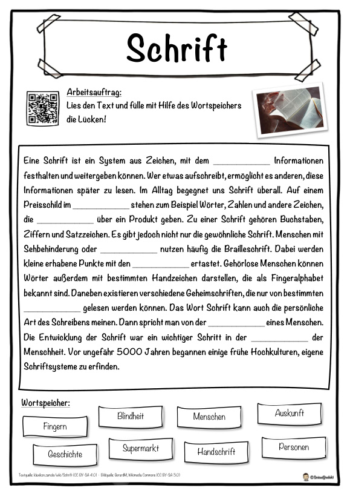

Schrift: Hörverstehen und Suchsel
Schrift: Lückentext, Hörverstehen per QR-Code und Suchsel zum Thema.
Dein Extra für das Teilen in der Story. Klasse 2 bis 4, mit Lösung. Den QR-Code auf der Seite scannen, dann den Text anhören.

Text- und Bildquellen stehen unten auf den Blättern (Klexikon, CC BY-SA). © Snice Unterricht